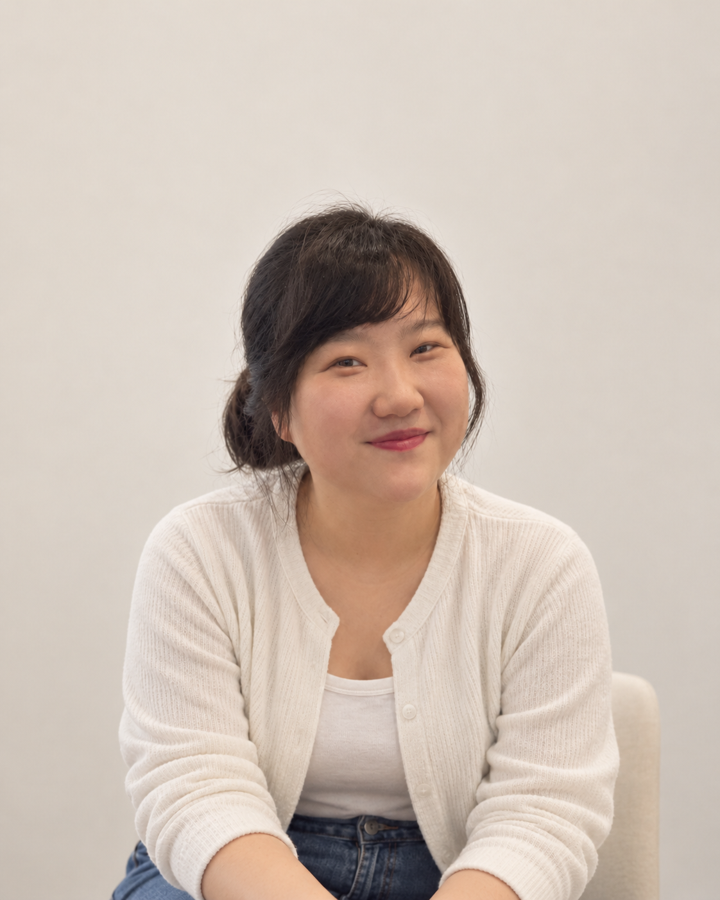
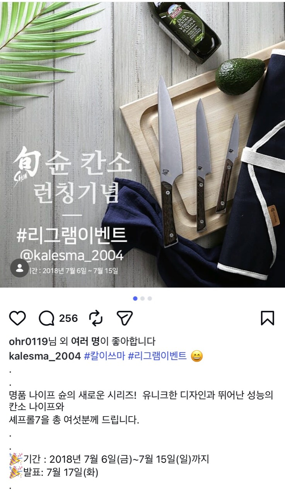
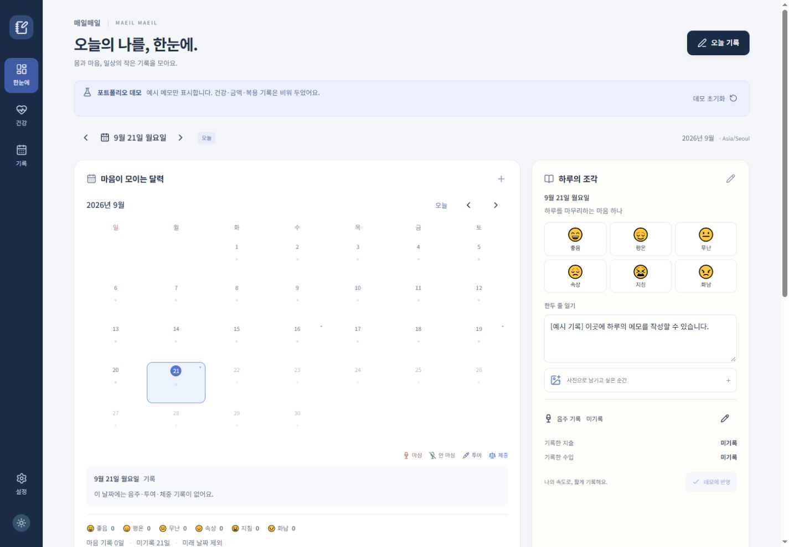
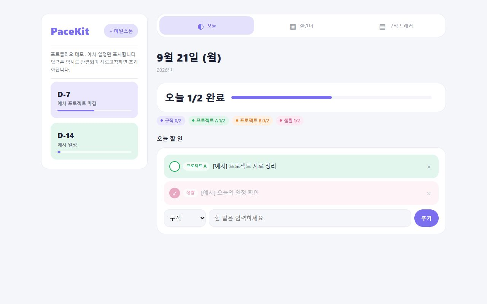
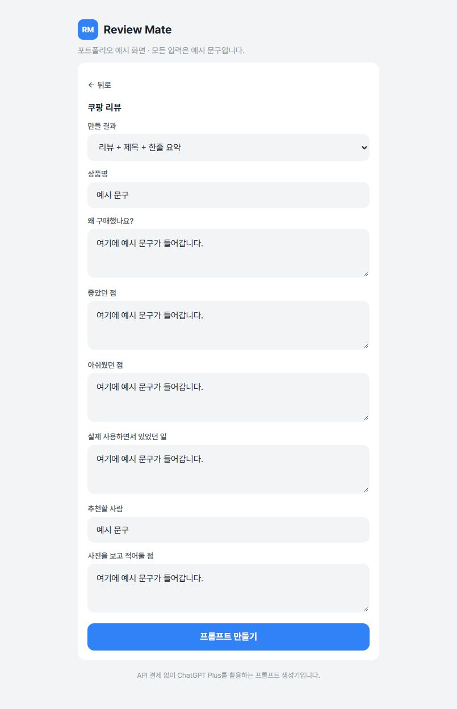

디자인
상세페이지, 배너, 프로모션 이미지 제작
Photoshop · HTML
디자인 · 운영 · 콘텐츠 검수
웹디자인과 온라인몰 운영을 경험했고,
요즘은 AI의 도움을 받아 필요한 도구를 직접 만듭니다.

디자인·운영·검수·고객응대. 회사별 담당 업무입니다.
입고 공정에서 상품을 분류하고, 실물 상품과 전산 정보를 확인했습니다.
IB · 사원상품정보와 카테고리 매칭을 확인하고, 기준에 맞지 않는 정보를 검수했습니다.
소속: 에이치앤티아웃소싱시스템라이더 문의 안내와 민원 대응, 채팅 상담을 담당했습니다.
소속: (주)케이에스한국고용재고를 조사하고 오류 상품 확인과 전산 처리 업무를 맡았습니다.
ICQA정책 기준에 따라 영상의 적합성과 위반 여부를 검수하고 태그를 적용했습니다.
소속: ㈜트랜스코스모스스토어팜·11번가·옥션·G마켓의 상품 등록과 상세페이지 제작·수정을 담당했습니다.
온라인 쇼핑몰상세페이지 기획·디자인과 사방넷 상품등록, 고도몰·스토어팜·오픈마켓 운영을 맡았습니다. 백화점몰 기획전, 주문·발주, CS, SNS 프로모션도 함께 진행했습니다.
온라인 쇼핑몰사이트 유지보수, 국립중앙도서관 웹진·뉴스레터 디자인 관리와 온라인 마케팅 업무를 경험했습니다.
웹디자인공연 기획·홍보와 예매처 관리 업무를 맡았습니다.
공연 운영공연 기획·홍보, 예매처 관리, 매표·공연장 운영과 프로모션을 경험했습니다.
공연 운영회사명을 누르면 상세 업무가 펼쳐집니다.
상세페이지, 배너, 프로모션 이미지 제작
상품 등록부터 기획전, 주문·발주·CS까지
상품정보와 콘텐츠를 기준에 맞춰 확인
자료 정리, 초안 작성, 필요한 웹앱 제작
기획부터 디자인·상품 등록까지 직접 맡았습니다.
통일된 표지로 정리한 2018년 상업 작업입니다. 선택하면 당시 작업 원본을 볼 수 있습니다.

SNS PROMOTION / 2018
이벤트 안내부터 당첨자 발표, 후속 쿠폰 안내까지 직접 진행했습니다.

흩어진 생활 기록을 카드와 달력에 모아
하루의 흐름을 확인하는 기록 앱.

목표 일정과 오늘 할 일, 지원 현황을 모아
다음 행동을 정리하는 루틴 도구.

구매 이유와 장단점을 정리해
리뷰 초안용 프롬프트를 만드는 도구.
2026 · 개인 프로젝트 · 이미지를 누르면 예시 데이터 데모가 새 탭에서 열립니다.
제가 해온 일이 필요한 곳에서, 다음 경력을 잘 쌓아가고 싶습니다.